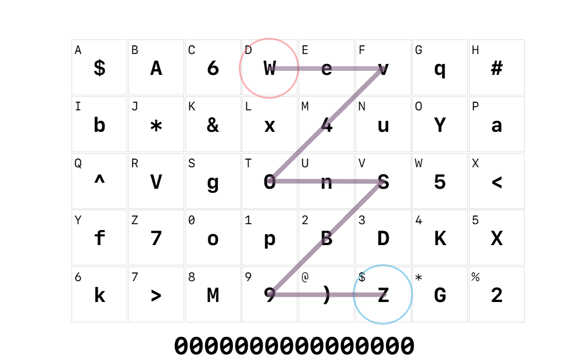

カードの使い方
※めちゃくちゃ注意!!!!!※ カードにメモ書きするのは絶対にやめなさい！！！！
万が一にもカードが盗まれてしまった際にパスワードの推測に利用されてしまう危険性があります。
泥棒に「鍵ここにあります」って教えてるようなもんです。このカードは常に「盗まれる可能性のあるもの」として扱ってください。
注意: 大文字の「O」と数字の「0」、小文字の「l」と数字の「1」など、字形が酷似している文字にご注意ください。
まず、数字のみのパスワードを作るか、大文字・小文字のアルファベット、数字、特殊文字全てを含んだパスワードを作るかを決めます。
数字のみ (表面):
アルファベット(大文字か小文字かは問いません)と数字の1~4で構成する文字列を、PIN番号に変換します。
ATMやクレジットカードの暗証番号、携帯回線のネットワーク暗証番号など、数字のみで構成される認証情報を生成するのに向いています。
大文字小文字・数字・特殊文字全て (裏面):
アルファベット(大文字か小文字かは問いません)と数字の0~9、記号(@, $, *, %)で構成される文字列を、大文字・小文字のアルファベット、数字、特殊文字を含んだ非常に強力なパスワードに変換します。複雑さが美徳です。基本的にはこちらを推奨します。
どちらのパスワードを生成するか決めたら、各枠の左上または右下の英数字で文字列を作ります。何でも良いです。ABCD1234とかでも大丈夫ですが、長ければ長いほど安全です。
また、同じ文字の連続は極力避けた方が良いでしょう。つまらないですからね、「AAAAAAAA」なんて文字の並びを見ても退屈に決まってます。
「STINKYSOCKS」とかにした方が面白いでしょ？そういうことです。それに、こうすることでセキュリティもわずかながら向上します。
クスッと笑えて、よりセキュア。なんて理に適った方法なんでしょう！
一意の文字列を決めたら、その文字列の各文字を、その文字が記されている枠の真ん中の文字に置き換えます。
全て置き換えた結果できた文字列が、あなたの新しい、まばゆいパスワードです。
例えば、S/Nが0000000000000000で、裏面の表でABCD1234を変換する場合:

[A, B, C, D, 1, 2, 3, 4]がそれぞれ画像のように対応し、[$A6WpBDK]となります。
このような方法もあります:
もしくは、始点のマスと終点のマスを決めて、その間を一意のパターンでなぞってパスワードを導き出すのも一つの手法です。
暗記より感覚派のあなたにはこちらの方が良いかもしれません。
例えば、S/Nが0000000000000000で、裏面の表で[W]を始点に以下のようなパターンでなぞる場合:

[W, e, v, 4, O, n, S, B, 9, ), Z]を通るため、[Wev4OnSB9)Z]となります。